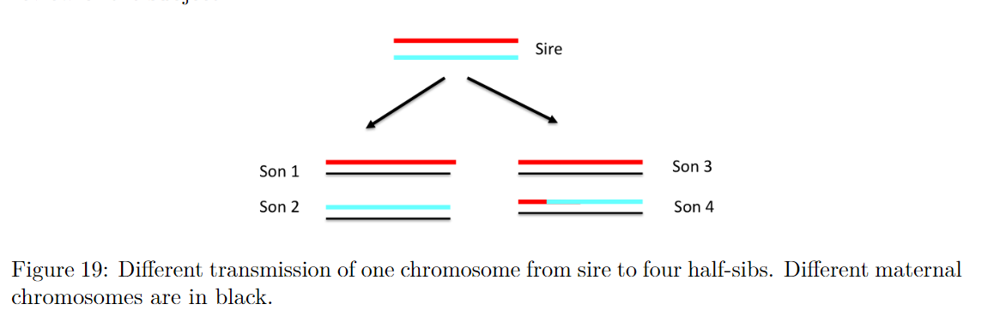

<!DOCTYPE html>


<html lang="zh-CN">


<head>
  <meta charset="utf-8" />
    
  <meta name="viewport" content="width=device-width, initial-scale=1, maximum-scale=1" />
  <title>
    基因组选择模型介绍下 |  VincereZhou&#39;s blog
  </title>
  <meta name="generator" content="hexo-theme-ayer">
  
  <link rel="shortcut icon" href="/images/mojie.jpg" />
  
  
<link rel="stylesheet" href="/dist/main.css">

  <link rel="stylesheet" href="https://cdn.jsdelivr.net/gh/Shen-Yu/cdn/css/remixicon.min.css">
  
<link rel="stylesheet" href="/css/custom.css">

  
  <script src="https://cdn.jsdelivr.net/npm/pace-js@1.0.2/pace.min.js"></script>
  
  

  

<link rel="alternate" href="/atom.xml" title="VincereZhou's blog" type="application/atom+xml">
</head>

</html>

<body>
  <div id="app">
    
      
    <main class="content on">
      <section class="outer">
  <article
  id="post-基因组选择模型介绍下"
  class="article article-type-post"
  itemscope
  itemprop="blogPost"
  data-scroll-reveal
>
  <div class="article-inner">
    
    <header class="article-header">
       
<h1 class="article-title sea-center" style="border-left:0" itemprop="name">
  基因组选择模型介绍下
</h1>
 

    </header>
     
    <div class="article-meta">
      <a href="/posts/e0b3b4ee/" class="article-date">
  <time datetime="2022-04-09T06:41:14.000Z" itemprop="datePublished">2022-04-09</time>
</a> 
  <div class="article-category">
    <a class="article-category-link" href="/categories/%E7%90%86%E8%AE%BA%E5%AD%A6%E4%B9%A0/">理论学习</a> / <a class="article-category-link" href="/categories/%E7%90%86%E8%AE%BA%E5%AD%A6%E4%B9%A0/%E7%BA%BF%E6%80%A7%E6%A8%A1%E5%9E%8B/">线性模型</a>
  </div>
  
<div class="word_count">
    <span class="post-time">
        <span class="post-meta-item-icon">
            <i class="ri-quill-pen-line"></i>
            <span class="post-meta-item-text"> 字数统计:</span>
            <span class="post-count">4.4k</span>
        </span>
    </span>

    <span class="post-time">
        &nbsp; | &nbsp;
        <span class="post-meta-item-icon">
            <i class="ri-book-open-line"></i>
            <span class="post-meta-item-text"> 阅读时长≈</span>
            <span class="post-count">15 分钟</span>
        </span>
    </span>
</div>
 
    </div>
      
    <div class="tocbot"></div>


  
    <div class="article-entry" itemprop="articleBody">
       
  <link rel="stylesheet" type="text/css" href="https://cdn.jsdelivr.net/hint.css/2.4.1/hint.min.css"><p>本篇介绍第二类基因组选择方法，通过使用基因组数据构建新的关系矩阵加入到混合模型方程组中直接获得基因组估计育种值，如 GBLUP方法和 ssGBLUP 方法。</p>
<span id="more"></span> 
<h1>基因组关系矩阵</h1>
<p>先看三个定义</p>
<ul>
<li>共亲系数  ，是两个个体的任一基因座，各随机抽取一个基因同源相同 (identical by descent, IBD，指两个基因相同并且来自于同一祖先)的概率。如果是一个个体，那么是可放回抽样。</li>
<li>近交系数 ，某个个体  同一基因座的两个基因同源相同的概率</li>
<li>分子亲缘相关，或者说加性遗传相关  ，指两个个体的基因组中同源相同基因的比例，加性遗传相关的另一重含义是其为两个个体育种值的相关，即  。</li>
</ul>
<p>注意下面说到的亲缘系数均指   ，而不是 Wright 在 1922 年定义的那个亲缘系数（其中    是其分子 ）。</p>
<h2 id="IBS-和-IBD">IBS 和 IBD</h2>
<p>两个个体的 IBS (identity by states, 指两个基因相同) 概率，或者<strong>分子共亲系数</strong> (“molecular” coancestries)  表示为两个个体各自随机抽取一个基因相同的概率。分子亲缘关系 (<em>molecular relationships</em>) 定义为  ，这里和  类似 ，为两个个体的基因组中相同的比例。</p>
<p> 和   具有下面的关系。我们考虑从个体  和 个体  中各随机抽取一个基因，它们由于 IBD 相同的额概率为  ，它们不是 IBD 相同的概率为  但是由于偶然相同的概率为  。因此， ，重排一下，我们得到：</p>
<p style=""></p><p>易得  ，或   ，因此相比于 IBD ，IBS 是向上有偏的。</p>
<p>左右乘2，我们得到  和   的关系：</p>
<p style=""></p><p>或者</p>
<p style=""></p><p>根据这个公式，我们可以从 IBS 关系中得到 IBD 关系，这个等价于 VanRaden 的  阵 (?)。</p>
<h2 id="单个-QTL-的个体间亲缘关系">单个 QTL 的个体间亲缘关系</h2>
<p>假设我们研究的物种只有一个二等位基因的基因，你获得了想要的个体的基因型之后，那么此时个体   和  的协方差是什么呢？让我们把育种值表达为加性值 () 减去群体均值 ( ) 后的差值：</p>
<p style=""></p><p>这里  为 012 编码，即参考碱基的数目。如果这个 QTL 具有先验分布，其先验方差为  ，假设哈温平衡下的加性方差为  。根据方差和协方差的计算公式，我们有</p>
<p style=""></p><p>如果我们定义  ，换句话说我们采用中心化的编码方式，那么此时两个个体之间的协方差等于  。</p>
<p>对个体间的协方差  除以加性方差  ，我们得到了根据这个 QTL 得到的加性亲缘关系，这里称为  。 和  的两个例子如下表所示 (这两个表感觉有问题，我计算的都对不上，第一个表 AA 和 AA 我计算应该是 2 ) ：</p>
<p style=""></p><p style=""></p><p>我们看到这里有负的亲缘关系，原因是由于我们对育种值的计算过程中强行<strong>使得其为和群体均值的差值</strong>，因此这是正常的。</p>
<p>这里的近交系数就是   ，这里可能出现负值，说明这个个体的杂合子比例低于预期。</p>
<h2 id="基因组关系矩阵">基因组关系矩阵</h2>
<p>我们可以计算 IBS，再将其调整为 IBD 。我们先看 VanRaden 的第一种基因组关系矩阵，这里我们就是从上面的单个 QTL 推导为多个标记。为了使得育种值的均值为 0 ，我们对中心化的基因型编码，如下：</p>
<p style=""></p><p>在理论上，为了参考系谱基础群体的育种值，这里我们应该也用基础群体的等位基因频率。但是这一点基本无法实现，因此我们通常还是用已有基因型数据的基因频率。育种值计算公式为</p>
<p style=""></p><p>即，个体育种值就是所有标记效应的和。我们假设标记效应的先验分布的协方差矩阵为</p>
<p style=""></p><p>其中</p>
<p style=""></p><p>通常我们假设不同标记的方差相同，即  。那么，个体育种值的协方差矩阵为</p>
<p style=""></p><p>但是这里还不是亲缘关系矩阵，<strong>亲缘关系矩阵是标准化的协方差矩阵</strong>，因此这里我们还要除以加性方差，即育种值的方差。如果我们假设<strong>哈温平衡</strong>和<strong>连锁平衡</strong>，我们已知存在下式</p>
<p style=""></p><p>因此，我们得到亲缘关系矩阵为</p>
<p style=""></p><p> 阵的对角线元素衡量一个个体的纯合子位点数目（纯合子位点数目越多，对角线元素越大），其非对角线元素衡量两个共同的碱基的数目。注意， 阵可以理解是对 IBS 矩阵做了修改，从而变成了对于 IBD 关系的一个近似，这种近似比从系谱得到的近似更好，因此这就是为什么基因组预测由于系谱预测。</p>
<h3 id="GEBV-和-SNP-效应">GEBV 和 SNP 效应</h3>
<p>估计SNP效应时，我们有模型如下</p>
<p style=""></p><p>这里  是一个对角矩阵，表示每个 SNP 的相对方差，这个模型等价于</p>
<p style=""></p><p>因此，我们有</p>
<p style=""></p><p>估计SNP效应得到的 GEBV 为</p>
<p style=""></p><p>我们也可以从 GBLUP 的 GEBV 值中得到 SNP 效应（Stranden and Garrick, 2009）</p>
<p style=""></p><p>我们检查一下</p>
<p style=""></p><h3 id="G阵中使用的基因频率">G阵中使用的基因频率</h3>
<p>在构建  阵的过程中，使用的基因频率有些困惑的地方。(Strandén and Christensen 2011) 证明了，  中，构建  矩阵中使用不同的基因频率是无关的，只会使得所有元素偏移了一个常数，即  阵均值偏移了一个常数。为了和系谱构建的  阵的元素范围 (<em>scale</em>) 相同，我们应该使用基础群体的基因频率。</p>
<p>但是，分母中使用的基因频率更加重要。因为方程  中使用的加性方差和基因频率应该是同一个群体的，因此采用当前群体的基因频率表示我们参考的是当前群体的加性方差。如果系谱的基础群体和当前的基因型数据群体相差了很多世代，那么加性方差会降低。</p>
<h3 id="G阵的性质">G阵的性质</h3>
<ul>
<li>
<p>GBLUP 的估计育种值  的均值为 0 ，这是因为  是中心化的矩阵 (缺证明？)。</p>
</li>
<li>
<p> 阵的均值为 0 。证明如下，首先我们有   (缺证明)。<strong>假设连锁平衡</strong>，那么  的和为0 （因为连锁平衡，两个位点的基因型乘积之和为0，因此  的非对角线元素全为 0，但是对角线元素不是 0 啊，感觉有问题）。</p>
</li>
<li>
<p>如果没有近交，那么  阵的对角线元素均值为 1 。  <strong>假设哈温平衡</strong>，存在  (缺证明)。  的对角线元素是某个位点对于碱基 “a” 和 “A” 的效应的协方差的平方，假设有  个个体，位点  的两个碱基的基因频率分布为   和  ，即 (没看懂)</p>
<p style=""></p><p>因此，  阵的对角线元素均值为</p>
<p style=""></p><p>如果存在近交，那么就不满足哈温平衡，此时假设近交系数为  ，那么基因型的分布为  (Falconer and Mackay, 1996) 。那么此时我们有</p>
<p style=""></p><p>此时，  阵的对角线元素均值为</p>
<p style=""></p><p>注意，这里  是群体内的近交系数，可以是负数，表示过多的纯合子。</p>
</li>
<li>
<p> 阵的非对角线元素均值几乎是 0 。也就是说，如果满足哈温平衡和连锁平衡，如果样本数为  ，那么（不懂）</p>
</li>
</ul>
<p style=""></p><h3 id="添加权重的G阵">添加权重的G阵</h3>
<p>在贝叶斯回归方法中，我们认为不同的标记可能有不同的方差。我们可以利用下式实现</p>
<p style=""></p><p>实际上，我们有另外一种简单的应用（在 BLUPF90 或 AsReml 中），我们可以通过分解加性方差，然后使用一个权重的矩阵，如  （笔误，这里的  应该是  ） ，其中</p>
<p style=""></p><p>注意如果  ，此时就是常规的基因组矩阵。</p>
<p>标记的权重可以通过几种方式来得到，比如从贝叶斯回归中得到。</p>
<h3 id="G阵是实际的亲缘关系的估计值">G阵是实际的亲缘关系的估计值</h3>
<p>使用系谱构建亲缘关系矩阵时，我们假设有无穷多个不相关的基因。在每一个位点，两个全同胞可以共享2个，1个或0个碱基。但是考虑所有的位点，那么两个全同胞就正好是共享一半的基因组。但是真实情况并非如此，由于染色体数目有限，并且同一条染色体上的位点会连锁地传递给下一代，因此两个半同胞之间地差异可能比较大，如下图</p>
<p></p>
<p>举个例子，这里 son 1 和 son3 比 son2 和 son4 更像。因此，在对 son 3 的预测中，son1 应该比 son2 和 son4 给更多的权重。基于上面这个图，这4个半同胞的亲缘关系可能如下</p>
<p style=""></p><p>我们称这里的亲缘关系是实际的亲缘关系 (<em>realized relationships</em>) ，与系谱中的期望的亲缘关系相对应 (<em>expected relationships</em>) ，这里我们用  矩阵表示，我们有</p>
<p style=""></p><p>以两个半同胞为例，其实际的亲缘关系范围是 [0, 0.5] ，其期望值为 0.25 。</p>
<p> 阵就是实际的亲缘关系的估计值（证明略），我们有</p>
<p style=""></p><p>由于  ，因此  。因此当  ，说明  的期望为 0，因此   可以在 0 的上下震荡，因此    可能是负数。</p>
<h2 id="G-阵和-A-阵-兼容问题">G 阵和 A 阵 兼容问题</h2>
<p>构建 阵时需要使用基础群体的基因频率，但是我们一般用的是当前群体的基因频率，这会导致两个问题。</p>
<p>首先就是系谱和标记的遗传基础不一致了，在构建 G 阵时通过使用 “中心化” 的基因型编码，这会使得当前群体的育种值均值   。而在使用系谱的常规评估中，我们仅仅是使得基础群体的育种值均值  。</p>
<p>举个例子，为了比较基于系谱的 EBV 和基于基因组的 EBV，它们可能在范围 (<em>scale</em>) 上不一样，也就是说二者的 EBV 可能是相差一个常数，即绝对值有差异，但是相对大小和排名可能是一样的。</p>
<p>第二个问题就是加性方差改变了，基于系谱的加性方差   是基础群体的育种值方差，而基于标记的加性方差  则是等位基因频率为  的群体的方差，即当前群体的育种值方差。但是，由于漂变和选择，标记倾向于固定，因此采用当前群体的   会比基础群体更小。</p>
<p>但是，<strong>只有当我们想要合并系谱信息和基因组信息时，这些问题才有意义</strong>。在下一步，我们采用下面的写法， 表示系谱中的基础群体， 表示基因型个体， 表示没有基因型的个体。</p>
<h3 id="校正-G-阵">校正 G 阵</h3>
<p>根据之前的描述，使用当前群体的基因频率，对  阵分子的影响相当于增加了一个常数，对分母的影响相当于乘以了一个常数，因此我们可以用下式校正  阵。</p>
<p style=""></p><p>这里  和  的取值有不同的说法，这里只说一种。Christensen et al. (2012) 建议根据两个式子来得到   和  ，如下，</p>
<p style=""></p><p style=""></p><p>也就是说，  阵和   阵的对角线元素均值相同，所有元素均值相同（或者说非对角线元素均值相同）。</p>
<h2 id="G-阵的奇异性问题">G 阵的奇异性问题</h2>
<p> 阵可能是一个奇异矩阵，有两个原因可能导致这一点。首先如果存在两个基因型完全相同的个体，那么  矩阵就会有相同的两行，导致  矩阵不满秩，同时  阵也不满秩。第二点，如果构建  矩阵时采用的当前群体的基因频率，那么  矩阵就会是一个不满秩的矩阵，因为最后一行可以从其他行得到（Strandén and Christensen 2011）。</p>
<p>为了得到一个非奇异的  阵 ，从而可以在MME中使用  ，我们有两种处理方式。第一种是往对角线添加一个很小的数，见下式，这里  是一个很小的数，通常是 0.01 或 0.05 。</p>
<p style=""></p><p>第二种方式如下，是添加    阵，这里的   是 0.05 。这种做法就是 BLUPF90 的做法。这种方式同时是作为剩余多基因效应，也就是这里的  是基因组不能解释的育种值比例，有些文章说添加剩余多基因效应之后交叉验证结果更好。</p>
<p style=""></p><h1>GBLUP</h1>
<h2 id="单性状模型">单性状模型</h2>
<p>在 GBLUP 中，我们其实就是用基因组构建的   阵替换了系谱构建的  阵，模型如下</p>
<p style=""></p><p>这里  。</p>
<p>如果假设随机向量均满足多变量正态分布，那么此时 <em>Best Predictions</em> 就是混合模型方程组的解：</p>
<p style=""></p><p>如果  ，那么可以进一步简化得到</p>
<p style=""></p><p>这里  。</p>
<h2 id="多性状模型">多性状模型</h2>
<p style=""></p><p>这里  就是多个性状的加性方差组分矩阵，通常  ，这里  就是多个性状的残差方差组分矩阵。</p>
<h1>Single Step GBLUP</h1>
<p>在实际的生产过程中，只有一小部分的个体有基因型。因此，最佳的方法是合并系谱和基因组关系矩阵，生成一个新的关系矩阵，由于 MME 中，这就是 ssGBLUP 的思想。</p>
<h2 id="H-阵推导">H 阵推导</h2>
<p>Legarra et al. (2009) 说明如果所有模型中的所有个体均有基因型，那么基因组评估会很简单。此时，我们可以将  阵视为先验的关系矩阵 (<em>prior relationship</em>) ，将  阵视为一个观测到的亲缘关系 (<em>observed relationship)</em> 。然而，现实中往往只有一部分个体有基因型，即   阵只包含一小部分个体，其相应的先验关系矩阵就是  阵。基于这个思想，我们可以基于无基因型的个体育种值 () 和 有基因型的个体育种值 () ，将有基因型个体的信息扩展到没有基因型的个体：</p>
<p style=""></p><p>如果我们设</p>
<p style=""></p><p>在下面的推导中，我们可以忽略  。我们将  按照无基因型个体在前，有基因型的个体在后的顺序分块如下</p>
<p style=""></p><p>基于有基因型个体的育种值信息，无基因型个体育种值的条件分布为 (多元正态分布的条件分布公式为  )</p>
<p style=""></p><p>这也可以视为</p>
<p style=""></p><p>其中  视为一个误差项，满足正态分布，其协方差矩阵为   。</p>
<p>因此，我们进一步推导得到（这就是基于基因型个体的信息的条件分布）</p>
<p style=""></p><p>同时，我们有</p>
<p style=""></p><p>最终，我们把上面的这些内容放在一个矩阵中，我们得到  矩阵</p>
<p style=""></p><p>这也可以简化为</p>
<p style=""></p><p>相应的逆矩阵比较简单，见下式  (Aguilar et al. 2010 ; Christensen and Lund 2010)</p>
<p style=""></p><p>注意这里的  是要单独对  进行求逆得到的，而不是  的子矩阵，因此构建  分为下面三步：</p>
<ol>
<li>采用 Henderson 的方法构建 </li>
<li>构建  并求逆</li>
<li>构建  并求逆</li>
</ol>
<p>一般来说  阵是一个比较稀疏的矩阵，但是我们注意到  阵和  阵是稠密矩阵，因此当基因型个体数目很多时，  阵可能也很稠密，那么此时求解 MME 计算量比较大。</p>
<p> 矩阵可以视为根据基因型亲缘关系对常规的系谱亲缘关系矩阵的一个修改。举个例子，假设两个个体在系谱中没有关系，但是由于它们的后代在  阵中有关系，因此这两个个体在  矩阵可能也有关系。</p>
<p>在构建  矩阵时，我们需要计算  ，这就表明这两个矩阵需要是可比较的 (Legarra et al. 2014)。由于构建  阵时我们一般不是采用基础群体的等位基因频率，因此我们需要先将   阵的范围调整为与  阵一致，之后再解决   阵的奇异性问题。</p>
<h2 id="MME">MME</h2>
<p>考虑下面的动物模型</p>
<p style=""></p><p>采用一步法的 MME 如下</p>
<p style=""></p><h1>APY 方法 (Misztal, 2016)</h1>
<p>我们将个体拆分为核心群体 (<em>core animals</em>, “c”) 和 非核心群体 (<em>non-core animals</em>, “n”) ，</p>
<p>我们有</p>
<p style=""></p><p>此时  计算公式如下</p>
<p style=""></p><p>这里  矩阵是一个关于非核心群体的对角矩阵，其元素为（下面的  为非核心群体）</p>
<p style=""></p><p>在实际中，猪和鸡的核心群体一般为 5k，牛的核心群体一般为 10-15k （Pocrnic et al., 2016）。</p>
<p>核心群体可以从所有的基因型个体中（具有高质量的基因分型）随机抽样得到。APY 方法得到 GEBV 通常比常规求逆方法的可靠性会提高 1-3% (估计是理论准确性)，原因可能是减少了采样噪音。</p>
<p>对于大群体，  是一个稀疏矩阵，但是   可能是一个稠密矩阵 (Faux and Genegler, 2013)。 此时我们可以通过一个间接的方式得到    （Stranden and Mantysaari, 2014）（应该就是根据矩阵求逆的公式）</p>
<p style=""></p><p>其中右手项的所有元素均是  矩阵的子矩阵，即</p>
<p style=""></p><p>如果我们采用 PCG 算法，我们只需要计算下式，只涉及到矩阵和向量的乘积</p>
<p style=""></p><h1>参考文献</h1>
<ol>
<li><a target="_blank" rel="noopener" href="http://nce.ads.uga.edu/wiki/lib/exe/fetch.php?media=gsip.pdf">http://nce.ads.uga.edu/wiki/lib/exe/fetch.php?media=gsip.pdf</a></li>
<li><a target="_blank" rel="noopener" href="http://nce.ads.uga.edu/wiki/lib/exe/fetch.php?media=andres_part2.pdf">http://nce.ads.uga.edu/wiki/lib/exe/fetch.php?media=andres_part2.pdf</a></li>
<li>de Los Campos G, Hickey J M, Pong-Wong R, et al. Whole-genome regression and prediction methods applied to plant and animal breeding[J]. Genetics, 2013, 193(2): 327-345.</li>
</ol>
 
      <!-- reward -->
      
    </div>
    

    <!-- copyright -->
    
    <div class="declare">
      <ul class="post-copyright">
        <li>
          <i class="ri-copyright-line"></i>
          <strong>版权声明： </strong>
          
          本博客所有文章除特别声明外，著作权归作者所有。转载请注明出处！
          
        </li>
      </ul>
    </div>
    
    <footer class="article-footer">
       
  <ul class="article-tag-list" itemprop="keywords"><li class="article-tag-list-item"><a class="article-tag-list-link" href="/tags/%E7%90%86%E8%AE%BA%E5%AD%A6%E4%B9%A0/" rel="tag">理论学习</a></li><li class="article-tag-list-item"><a class="article-tag-list-link" href="/tags/%E7%BA%BF%E6%80%A7%E6%A8%A1%E5%9E%8B/" rel="tag">线性模型</a></li></ul>

    </footer>
  </div>

   
  <nav class="article-nav">
    
      <a href="/posts/d7d9056/" class="article-nav-link">
        <strong class="article-nav-caption">上一篇</strong>
        <div class="article-nav-title">
          
            方差组分估计常用方法介绍
          
        </div>
      </a>
    
    
      <a href="/posts/97b48478/" class="article-nav-link">
        <strong class="article-nav-caption">下一篇</strong>
        <div class="article-nav-title">基因组选择模型介绍上</div>
      </a>
    
  </nav>

   
<!-- valine评论 -->
<div id="vcomments-box">
  <div id="vcomments"></div>
</div>
<script src="//cdn1.lncld.net/static/js/3.0.4/av-min.js"></script>
<script src="https://cdn.jsdelivr.net/npm/valine@1.4.14/dist/Valine.min.js"></script>
<script>
  new Valine({
    el: "#vcomments",
    app_id: "yHN3kf7fHt5wvleM2DVoHLdY-gzGzoHsz",
    app_key: "RPIwmdftljIzOtAULwc7JCAp",
    path: window.location.pathname,
    avatar: "monsterid",
    placeholder: "靓仔，看完留个评论再走哇！\n只需要填入昵称和邮箱就可以了",
    recordIP: true,
  });
  const infoEle = document.querySelector("#vcomments .info");
  if (infoEle && infoEle.childNodes && infoEle.childNodes.length > 0) {
    infoEle.childNodes.forEach(function (item) {
      item.parentNode.removeChild(item);
    });
  }
</script>
<style>
  #vcomments-box {
    padding: 5px 30px;
  }

  @media screen and (max-width: 800px) {
    #vcomments-box {
      padding: 5px 0px;
    }
  }

  #vcomments-box #vcomments {
    background-color: #fff;
  }

  .v .vlist .vcard .vh {
    padding-right: 20px;
  }

  .v .vlist .vcard {
    padding-left: 10px;
  }
</style>

 
   
     
</article>

</section>
      <footer class="footer">
  <div class="outer">
    <ul>
      <li>
        Copyrights &copy;
        2019-2022
        <i class="ri-heart-fill heart_icon"></i> Vincere Zhou
      </li>
    </ul>
    <ul>
      <li>
        
        
        <span>
  <span><i class="ri-user-3-fill"></i>访问人数:<span id="busuanzi_value_site_uv"></span></s>
  <span class="division">|</span>
  <span><i class="ri-eye-fill"></i>浏览次数:<span id="busuanzi_value_page_pv"></span></span>
</span>
        
      </li>
    </ul>
    <ul>
      
    </ul>
    <ul>
      
    </ul>
    <ul>
      <li>
        <!-- cnzz统计 -->
        
      </li>
    </ul>

    <!-- 与只只在一起天数 -->
	<ul>
		<li><span id="lovetime_span"></span></li>
	</ul>
    <script type="text/javascript">			
        function show_runtime() {
            window.setTimeout("show_runtime()", 1000);
            X = new Date("03/04/2021 22:11:00");
            Y = new Date();
            T = (Y.getTime() - X.getTime());
            M = 24 * 60 * 60 * 1000;
            a = T / M;
            A = Math.floor(a);
            b = (a - A) * 24;
            B = Math.floor(b);
            c = (b - B) * 60;
            C = Math.floor((b - B) * 60);
            D = Math.floor((c - C) * 60);
            lovetime_span.innerHTML = "只只和男朋友在一起了 " + A + "天" + B + "小时" + C + "分" + D + "秒"
        }
        show_runtime();
    </script>

  </div>
</footer>
      <div class="float_btns">
        <div class="totop" id="totop">
  <i class="ri-arrow-up-line"></i>
</div>

      </div>
    </main>
    <aside class="sidebar on">
      <button class="navbar-toggle"></button>
<nav class="navbar">
  
  <div class="logo">
    <a href="/"></a>
  </div>
  
  <ul class="nav nav-main">
    
    <li class="nav-item">
      <a class="nav-item-link" href="/">主页</a>
    </li>
    
    <li class="nav-item">
      <a class="nav-item-link" href="/archives">归档</a>
    </li>
    
    <li class="nav-item">
      <a class="nav-item-link" href="/categories">分类</a>
    </li>
    
    <li class="nav-item">
      <a class="nav-item-link" href="/tags">标签</a>
    </li>
    
    <li class="nav-item">
      <a class="nav-item-link" href="/friends">友链</a>
    </li>
    
    <li class="nav-item">
      <a class="nav-item-link" href="/about">关于</a>
    </li>
    
  </ul>
</nav>
<nav class="navbar navbar-bottom">
  <ul class="nav">
    <li class="nav-item">
      
      <a class="nav-item-link nav-item-search"  title="搜索">
        <i class="ri-search-line"></i>
      </a>
      
      
      <a class="nav-item-link" target="_blank" href="/atom.xml" title="RSS Feed">
        <i class="ri-rss-line"></i>
      </a>
      
    </li>
  </ul>
</nav>
<div class="search-form-wrap">
  <div class="local-search local-search-plugin">
  <input type="search" id="local-search-input" class="local-search-input" placeholder="Search...">
  <div id="local-search-result" class="local-search-result"></div>
</div>
</div>
    </aside>
    <script>
      if (window.matchMedia("(max-width: 768px)").matches) {
        document.querySelector('.content').classList.remove('on');
        document.querySelector('.sidebar').classList.remove('on');
      }
    </script>
    <div id="mask"></div>

<!-- #reward -->
<div id="reward">
  <span class="close"><i class="ri-close-line"></i></span>
  <p class="reward-p"><i class="ri-cup-line"></i>请我喝杯茶吧~</p>
  <div class="reward-box">
    
    <div class="reward-item">
      
      <span class="reward-type">支付宝</span>
    </div>
    
    
    <div class="reward-item">
      
      <span class="reward-type">微信</span>
    </div>
    
  </div>
</div>
    
<script src="/js/jquery-2.0.3.min.js"></script>


<script src="/js/lazyload.min.js"></script>

<!-- Tocbot -->


<script src="/js/tocbot.min.js"></script>

<script>
  tocbot.init({
    tocSelector: '.tocbot',
    contentSelector: '.article-entry',
    headingSelector: 'h1, h2, h3, h4, h5, h6',
    hasInnerContainers: true,
    scrollSmooth: true,
    scrollContainer: 'main',
    positionFixedSelector: '.tocbot',
    positionFixedClass: 'is-position-fixed',
    fixedSidebarOffset: 'auto'
  });
</script>

<script src="https://cdn.jsdelivr.net/npm/jquery-modal@0.9.2/jquery.modal.min.js"></script>
<link rel="stylesheet" href="https://cdn.jsdelivr.net/npm/jquery-modal@0.9.2/jquery.modal.min.css">
<script src="https://cdn.jsdelivr.net/npm/justifiedGallery@3.7.0/dist/js/jquery.justifiedGallery.min.js"></script>

<script src="/dist/main.js"></script>

<!-- ImageViewer -->

<!-- Root element of PhotoSwipe. Must have class pswp. -->
<div class="pswp" tabindex="-1" role="dialog" aria-hidden="true">

    <!-- Background of PhotoSwipe. 
         It's a separate element as animating opacity is faster than rgba(). -->
    <div class="pswp__bg"></div>

    <!-- Slides wrapper with overflow:hidden. -->
    <div class="pswp__scroll-wrap">

        <!-- Container that holds slides. 
            PhotoSwipe keeps only 3 of them in the DOM to save memory.
            Don't modify these 3 pswp__item elements, data is added later on. -->
        <div class="pswp__container">
            <div class="pswp__item"></div>
            <div class="pswp__item"></div>
            <div class="pswp__item"></div>
        </div>

        <!-- Default (PhotoSwipeUI_Default) interface on top of sliding area. Can be changed. -->
        <div class="pswp__ui pswp__ui--hidden">

            <div class="pswp__top-bar">

                <!--  Controls are self-explanatory. Order can be changed. -->

                <div class="pswp__counter"></div>

                <button class="pswp__button pswp__button--close" title="Close (Esc)"></button>

                <button class="pswp__button pswp__button--share" style="display:none" title="Share"></button>

                <button class="pswp__button pswp__button--fs" title="Toggle fullscreen"></button>

                <button class="pswp__button pswp__button--zoom" title="Zoom in/out"></button>

                <!-- Preloader demo http://codepen.io/dimsemenov/pen/yyBWoR -->
                <!-- element will get class pswp__preloader--active when preloader is running -->
                <div class="pswp__preloader">
                    <div class="pswp__preloader__icn">
                        <div class="pswp__preloader__cut">
                            <div class="pswp__preloader__donut"></div>
                        </div>
                    </div>
                </div>
            </div>

            <div class="pswp__share-modal pswp__share-modal--hidden pswp__single-tap">
                <div class="pswp__share-tooltip"></div>
            </div>

            <button class="pswp__button pswp__button--arrow--left" title="Previous (arrow left)">
            </button>

            <button class="pswp__button pswp__button--arrow--right" title="Next (arrow right)">
            </button>

            <div class="pswp__caption">
                <div class="pswp__caption__center"></div>
            </div>

        </div>

    </div>

</div>

<link rel="stylesheet" href="https://cdn.jsdelivr.net/npm/photoswipe@4.1.3/dist/photoswipe.min.css">
<link rel="stylesheet" href="https://cdn.jsdelivr.net/npm/photoswipe@4.1.3/dist/default-skin/default-skin.min.css">
<script src="https://cdn.jsdelivr.net/npm/photoswipe@4.1.3/dist/photoswipe.min.js"></script>
<script src="https://cdn.jsdelivr.net/npm/photoswipe@4.1.3/dist/photoswipe-ui-default.min.js"></script>

<script>
    function viewer_init() {
        let pswpElement = document.querySelectorAll('.pswp')[0];
        let $imgArr = document.querySelectorAll(('.article-entry img:not(.reward-img)'))

        $imgArr.forEach(($em, i) => {
            $em.onclick = () => {
                // slider展开状态
                // todo: 这样不好，后面改成状态
                if (document.querySelector('.left-col.show')) return
                let items = []
                $imgArr.forEach(($em2, i2) => {
                    let img = $em2.getAttribute('data-idx', i2)
                    let src = $em2.getAttribute('data-target') || $em2.getAttribute('src')
                    let title = $em2.getAttribute('alt')
                    // 获得原图尺寸
                    const image = new Image()
                    image.src = src
                    items.push({
                        src: src,
                        w: image.width || $em2.width,
                        h: image.height || $em2.height,
                        title: title
                    })
                })
                var gallery = new PhotoSwipe(pswpElement, PhotoSwipeUI_Default, items, {
                    index: parseInt(i)
                });
                gallery.init()
            }
        })
    }
    viewer_init()
</script>

<!-- MathJax -->

<script type="text/x-mathjax-config">
  MathJax.Hub.Config({
      tex2jax: {
          inlineMath: [ ['$','$'], ["\\(","\\)"]  ],
          processEscapes: true,
          skipTags: ['script', 'noscript', 'style', 'textarea', 'pre', 'code']
      }
  });

  MathJax.Hub.Queue(function() {
      var all = MathJax.Hub.getAllJax(), i;
      for(i=0; i < all.length; i += 1) {
          all[i].SourceElement().parentNode.className += ' has-jax';
      }
  });
</script>

<script src="https://cdn.jsdelivr.net/npm/mathjax@2.7.6/unpacked/MathJax.js?config=TeX-AMS-MML_HTMLorMML"></script>
<script>
  var ayerConfig = {
    mathjax: true
  }
</script>

<!-- Katex -->

<!-- busuanzi  -->


<script src="/js/busuanzi-2.3.pure.min.js"></script>


<!-- ClickLove -->

<!-- ClickBoom1 -->

<!-- ClickBoom2 -->

<!-- CodeCopy -->


<link rel="stylesheet" href="/css/clipboard.css">

<script src="https://cdn.jsdelivr.net/npm/clipboard@2/dist/clipboard.min.js"></script>
<script>
  function wait(callback, seconds) {
    var timelag = null;
    timelag = window.setTimeout(callback, seconds);
  }
  !function (e, t, a) {
    var initCopyCode = function(){
      var copyHtml = '';
      copyHtml += '<button class="btn-copy" data-clipboard-snippet="">';
      copyHtml += '<i class="ri-file-copy-2-line"></i><span>COPY</span>';
      copyHtml += '</button>';
      $(".highlight .code pre").before(copyHtml);
      $(".article pre code").before(copyHtml);
      var clipboard = new ClipboardJS('.btn-copy', {
        target: function(trigger) {
          return trigger.nextElementSibling;
        }
      });
      clipboard.on('success', function(e) {
        let $btn = $(e.trigger);
        $btn.addClass('copied');
        let $icon = $($btn.find('i'));
        $icon.removeClass('ri-file-copy-2-line');
        $icon.addClass('ri-checkbox-circle-line');
        let $span = $($btn.find('span'));
        $span[0].innerText = 'COPIED';
        
        wait(function () { // 等待两秒钟后恢复
          $icon.removeClass('ri-checkbox-circle-line');
          $icon.addClass('ri-file-copy-2-line');
          $span[0].innerText = 'COPY';
        }, 2000);
      });
      clipboard.on('error', function(e) {
        e.clearSelection();
        let $btn = $(e.trigger);
        $btn.addClass('copy-failed');
        let $icon = $($btn.find('i'));
        $icon.removeClass('ri-file-copy-2-line');
        $icon.addClass('ri-time-line');
        let $span = $($btn.find('span'));
        $span[0].innerText = 'COPY FAILED';
        
        wait(function () { // 等待两秒钟后恢复
          $icon.removeClass('ri-time-line');
          $icon.addClass('ri-file-copy-2-line');
          $span[0].innerText = 'COPY';
        }, 2000);
      });
    }
    initCopyCode();
  }(window, document);
</script>


<!-- CanvasBackground -->


    
  </div>
<script src="/live2dw/lib/L2Dwidget.min.js?094cbace49a39548bed64abff5988b05"></script><script>L2Dwidget.init({"pluginRootPath":"live2dw/","pluginJsPath":"lib/","pluginModelPath":"assets/","tagMode":false,"debug":false,"model":{"jsonPath":"live2d-widget-model-wanko"},"display":{"position":"left","width":150,"height":300,"hOffset":80,"vOffset":-70},"mobile":{"show":false,"scale":0.5},"log":false});</script></body>

</html>